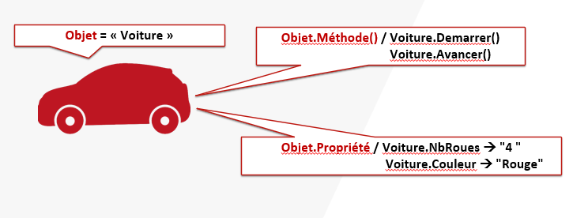

Les Objets
-
Contrairement à Batch ou Bash qui sont des langages « textes ».Powershell est un langage objet.
-
Sous PowerShell, chaque commande renverra un objet d’un type précis possédant ses propriétés et ses méthodes.

Le Pipeline
-
Le pipeline, symbolisée par le caractère |
[AltGr] + [6]permet de chainer plusieurs commandes entre elles. -
Autrement dit, la sortie d'une commande correspond à l'entrée de la suivante.
-
Les valeurs des paramètres de la deuxième commande lui sont fourni par la première commande.
Get-Member
PS> Get-Process | Get-Member
TypeName: System.Diagnostics.Process
Name MemberType Definition
---- ---------- ----------
Handles AliasProperty Handles = Handlecount
Name AliasProperty Name = ProcessName
NPM AliasProperty NPM = NonpagedSystemMemorySize64
PM AliasProperty PM = PagedMemorySize64
SI AliasProperty SI = SessionId
VM AliasProperty VM = VirtualMemorySize64
WS AliasProperty WS = WorkingSet64
Parent CodeProperty System.Object Parent{get=GetParentProcess;}
Disposed Event System.EventHandler Disposed(System.Object, System.EventArgs)
ErrorDataReceived Event System.Diagnostics.DataReceivedEventHandler ErrorDataReceived(System.Object, System.Diagnostics.…
Exited Event System.EventHandler Exited(System.Object, System.EventArgs)
OutputDataReceived Event System.Diagnostics.DataReceivedEventHandler OutputDataReceived(System.Object, System.Diagnostics…
BeginErrorReadLine Method void BeginErrorReadLine()
BeginOutputReadLine Method void BeginOutputReadLine()
CancelErrorRead Method void CancelErrorRead()
CancelOutputRead Method void CancelOutputRead()
Close Method void Close()
CloseMainWindow Method bool CloseMainWindow()
Dispose Method void Dispose(), void IDisposable.Dispose()
Equals Method bool Equals(System.Object obj)
GetHashCode Method int GetHashCode()
GetLifetimeService Method System.Object GetLifetimeService()
GetType Method type GetType()
InitializeLifetimeService Method System.Object InitializeLifetimeService()
Kill Method void Kill(), void Kill(bool entireProcessTree)
Refresh Method void Refresh()
Start Method bool Start()
ToString Method string ToString()